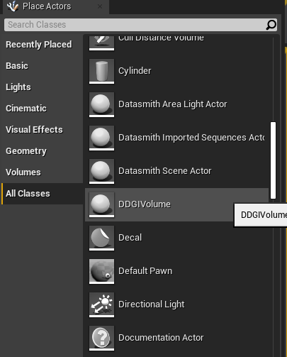
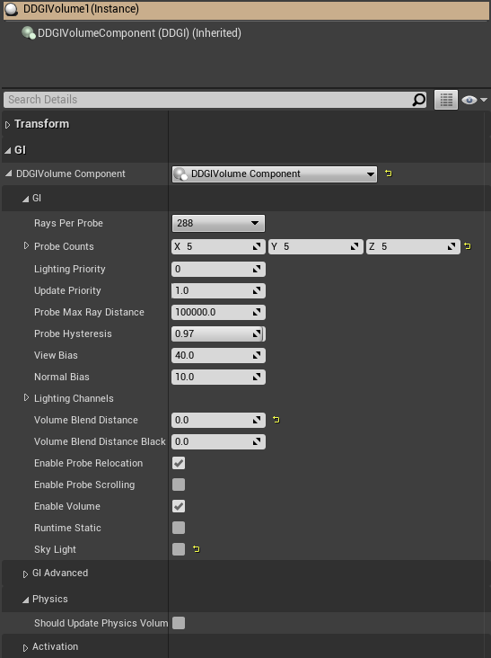
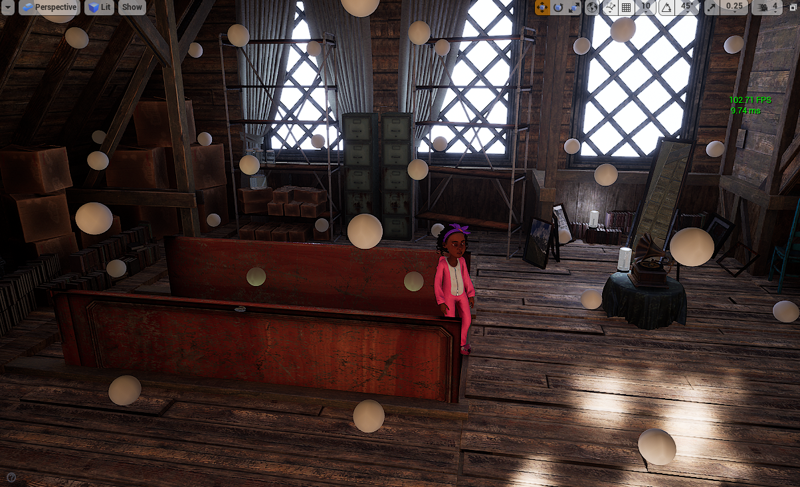
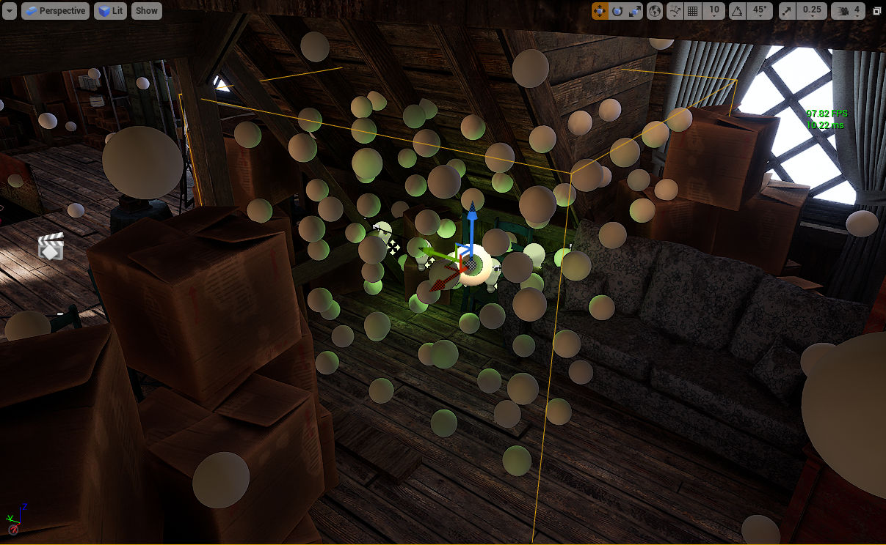
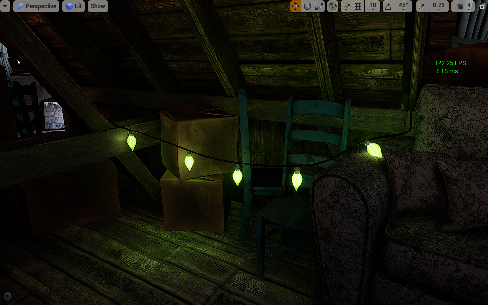
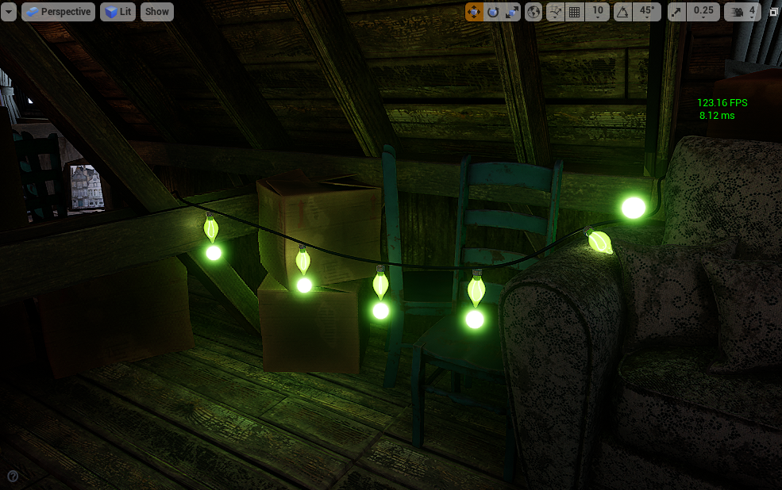
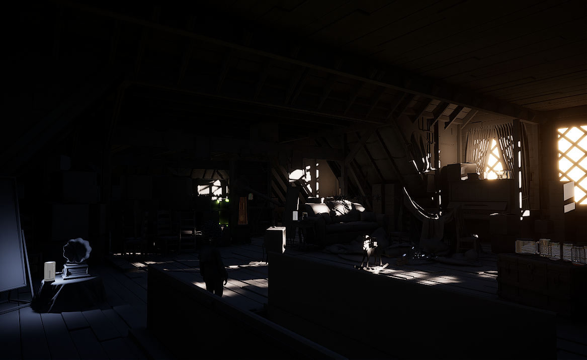
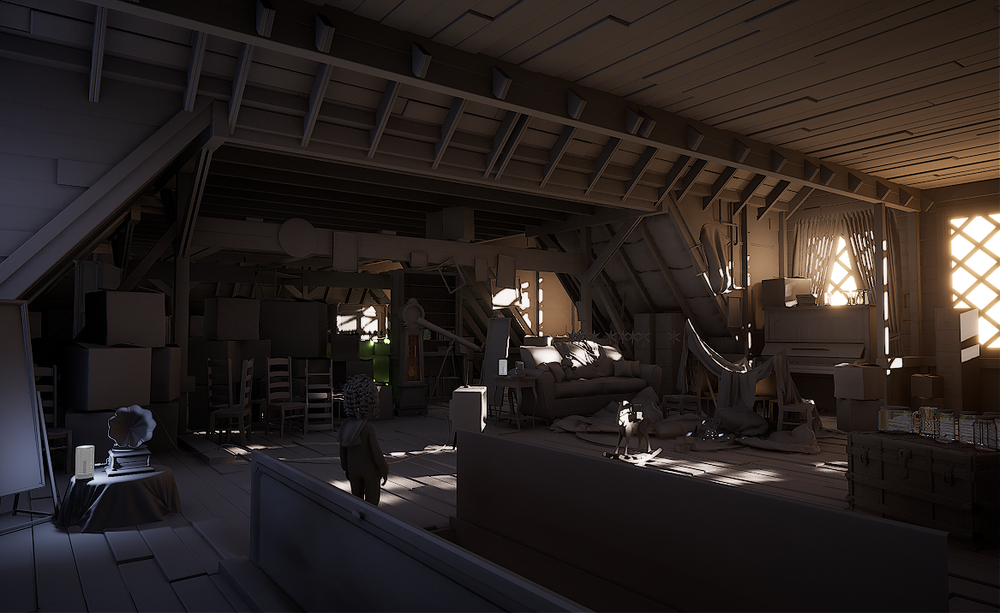

Unreal Engine 4 Plugin¶
To bring the advantages of RTXGI to as many developers as possible, all RTXGI 1.1 features are now available in Unreal Engine 4 through the RTXGI UE4 plugin. To use the RTXGI UE4 plugin, you’ll first need to meet the following software and hardware requirements:
Software:Windows 10 v1809 or higher
Visual Studio 2017 or 2019
Windows SDK version 10.0.17763 or higher (can be installed using the Visual Studio Installer)
The latest drivers for your GPU. NVIDIA drivers are available here
Unreal Engine 4.25.3 source code, available for free from Epic Games or from the NVIDIA NvRTX branch of Unreal Engine.
Any DXR enabled GPU. NVIDIA DXR enabled GPUs:
RTX 3090, 3080, 3070
RTX 2080 Ti, 2080 SUPER, 2080, 2070 SUPER, 2070, 2060 SUPER, 2060
GTX 1660 Ti, 1660 SUPER, 1660
GTX 1080 Ti, 1080, 1070, 1060 with at least 6GB of memory
Note
Problems, Feedback, and Bugs
If you encounter any problems, have feedback, or would like to report a bug, please contact: rtxgi-support-service@nvidia.com
Plugin Contents¶
RTXGI-UE4.25.3.patch and RTXGI-NvRTX4.25.3.patch are patch files to be applied to the appropriate engine branch.
Getting Started¶
Minor engine changes are required for the RTXGI plugin to work in UE4.25. This distribution of the RTXGI UE4 plugin is designed to be overlaid on top of Epic’s Unreal Engine 4.25.3 or NVIDIA’s NvRTX 4.25.3 source code.
Note
Patch files for the plugins are available in the RTXGI SDK Github repository under the ue4-plugin directory.
Plugin Installation:
Clone Unreal Engine 4.25.3 from Epic Games Unreal Engine GitHub.
Select NvRTX 4.25.3 if using the NVIDIA NvRTX UE4.25 branch.
Download RTXGI-UE4.25.3.patch or RTXGI-NvRTX4.25.3.patch from the ue4-plugin directory of the RTXGI GitHub repository. Select the patch that matches the engine branch you’ve chosen.
Apply the necessary engine changes and RTXGI plugin:
apply the provided
.patchfile to install the plugin and necessary engine changes.
Copy the provided
.patchfile in the root directory of the cloned Unreal Engine source code.Open a command prompt, type
git apply --check rtxgi-ue4.25.3.patch, and hit enter.
If using NvRTX, type
git apply --check rtxgi-nvrtx4.25.3.patchinstead.This checks if the chosen patch can be applied to the respective engine build.
If
git apply --check ...returns any errors, follow the prompt and resolve conflicts manually.If
git apply --check ...returns nothing, or only warnings, everything is correct. Continue to the next step.In the same command prompt, type
git apply rtxgi-ue4.25.3.patchin the root directory and hit enter.
If using NvRTX, type
git apply rtxgi-nvrtx4.25.3.patchinstead.All necessary patches have been applied! Proceed to the next step.
Run the UE4 editor in DirectX 12 mode by adding
-dx12to the command line (DirectX12 is required for ray tracing).Enable the RTXGI plugin in the Editor.
Select
Edit->Plugins->Lighting->NVIDIA RTXGI Plugin.Restart the editor.
Enable
Force No Precomputed Lightingto avoid doubling lighting contributions (i.e. mixing RTXGI and baked indirect lighting)
To disable precomputed lighting in the current level, select
World Settings->Lightmass->Force No Precomputed Lighting.To disable precomputed lighting globally, disable
Project Settings->Engine->Rendering->Lighting->Allow Static Lighting.Congratulations, you are now ready to use RTXGI in Unreal Engine 4!
Place
DDGIVolumeactors in the scene to use RTXGI.Detailed instructions on further uses are available in the Artist Overview.
Note
Probes will temporally accumulate bounced lighting within a few seconds after volume placement.
Functionality¶
RTXGI implements the Dynamic Diffuse Global Illumination (DDGI) algorithm to compute diffuse global illumination. DDGI uses ray tracing to gather radiance and distance data on a regular grid of probes. This is similar to existing irradiance probe solutions you may already be familiar with, but radiance and distance calculations now occur in real time. RTXGI probes temporally accumulate data and use a statistics-based method to resolve visibility and prevent light leaking.
To use RTXGI in UE4, place a DDGIVolume actor in the scene. These volumes contain the regular grid of probes that RTXGI updates. Various properties of a DDGIVolume can be adjusted, and these are discussed in the Artist Overview. One DDGIVolume is updated per frame in a weighted round robin fashion using the volume’s Update Priority property.
Several new console variables (“cvars”) are available to with RTXGI. These are described in the table below.
Command |
Options |
Description |
|---|---|---|
|
0, 1 |
Toggles RTXGI on or off. |
|
0, 1 |
Toggles a visualization of RTXGI volumes and probes on or off. |
|
0, 1 |
Toggles probe visualization. This allows the user to see what the probes see from the camera’s point of view. |
|
None |
Allows the user to see the texture from the |
Project Settings:
The RTXGI plugin has settings under the project settings.
Irradiance Bits Per Channel - by default, a 10 bit per color channel texture format is used to store probe irradiance. With extended radiance or very bright light sources, 10-bits may not be enough. Irradiance bit depth can be changed to 32-bits for an RGBA32F texture format to solves the problems at the cost of increased memory use.
Debug Probe Radius - sets the size of the spheres used when visualizing
DDGIVolumeprobes.
Current Limitations:
RTXGI indirect lighting doesn’t apply to forward rendering.
RTXGI indirect lighting doesn’t apply to ray traced surfaces (for example, ray traced reflections).
Artist Overview¶
RTXGI adds a high performance option to compute dynamic global illumination in real-time in UE4. As implied by the name, RTXGI requires ray tracing to be enabled and the plugin to be active. If ray tracing is not available, the plugin will load the probe textures saved as part of the level from the disk upon load of level.
Note
without DirectX Raytracing support available from the graphics hardware and operating system, DDGIVolume probes operate in a static mode, where the probes do not update at runtime.
Using RTXGI¶
Find the DDGIVolume actor under All Classes (as shown in the figure below) and place it in a level. Dynamic indirect lighting is generated inside the volume with RTXGI. The default DDGIVolume values should work well for many situations, but may need tweaking for your specific use case.
The DDGIVolume Actor in the All Classes Actor category |
DDGIVolume Actor Settings |
|---|---|
 |
 |
Property |
Description |
|---|---|
Rays Per Probe |
Sets the number of rays traced per probe. Higher numbers of rays traced per probe increases image quality by producing more stable indirect illumination, but will have a higher frame time cost. In many cases, the default of 288 rays per probe is acceptable. |
Probe Counts |
Sets the number of probes placed on each axis of a |
Update Priority |
A weighted round robin system is used to update volumes. Volumes with higher priority values are updated more often. As a result, as more volumes are added to the scene, it will take longer for the system to update all volumes. |
Probe Max Ray Distance |
The maximum distance a probe ray can travel. No surfaces are hit past this distance. Reducing this value can increase performance in some scenarios. |
Probe Hysteresis |
Affects the temporal accumulation of ray tracing results in probes. A value of 1 always uses the historical values in the probes, ignoring new ray results. A value of 0 always uses the latest ray traced results, ignoring all previous probe data. This setting is best set to a value that balances historical and newly ray traced samples. In general, the default value will work well for most scenes. |
View and Normal Bias |
Similar to shadow map biases, these settings help adjust for visibility artifacts. If you are seeing shadow leaking or dark areas that look incorrect, consider adjusting these bias values. In general, the view bias value should be 4x larger than the normal bias. |
Volume Blend Distance |
Specifies how the |
Enable Probe Relocation |
When selected, this feature automatically moves probes inside their volume based on the world geometry. Probes move to more ideal locations the in playable space, instead of (for example) being positioned behind walls or other objects. |
Enable Probe Scrolling |
When selected, probes keep their position in world-space when the volume moves. This is useful for moving volumes to have more temporaly stable lighting results. |
Tips and Tricks¶
Sparse probe layouts recommended¶
Relatively sparse probe grids are good practice for both high performance and quality results. As a starting point, we recommend setting probes about 2-3 meters apart from each other in a typical human-scale indoor scene. In large outdoor scenes, you can go much sparser and still get good results!
Note
By design, RTXGI does not generate high frequency detail. Increasing probe density can help to an extent, but it won’t produce precise or sharp lighting and shadow at any density. For high frequency details, use other forms of lighting such as point lighting with shadows or SSGI.
You can have multiple DDGIVolumes with varying probe densities. The system will always make use of the probes in the denser volume. You might do this if you need a more precision in a specific area. It may not take an expensive volume to achieve more precise sampling. The volume on the bottom right is a 5x5x5 DDGIVolume set to the default 288 rays per probe. A volume like this is relatively inexpensive and can help achieve the result you want!
Recommended probe density |
A higher density “detail” volume |
|---|---|
 |
 |
Emissive surfaces are light sources with RTXGI¶
In this example of the NVIDIA Attic scene, there are large emissive meshes outside the windows to generate extra indirect light.
{kind=link}
Any emissive surface can be a light source with RTXGI. The larger and more physically available the light emissive mesh is to RTXGI probes, the greater the lighting contribution. Emissive surface values can also be turned up to generate more light. With this approach, you might find it’s better to switch from 10-bit irradiance to 32-bit irradiance, since this provides a more detailed range of light contributions. 32-bit irradiance should be used with caution though, since it increases the memory cost 3x. Only enable 32-bit irradiance when absolutely necessary!
With RTXGI, it is now possible to light a scene with fewer point lights, spot lights, and/or area lights. Instead, you can rely on a combination of a few lights and emissive surfaces. This change will not only improve workflow and iteration time, but it can improve performance (due to fewer lights). You may find it’s better to take on the small fixed cost of RTXGI instead of using many shadow casting lights. Lighting a scene in this way is a different approach, but may produce a result that runs faster and is easier to create.
Here’s a practical example:
Emissive meshes generate extra light without being a visible part of the scene. In UE4, the emissive meshes can be marked as only visible to ray tracing. You can create “hidden” emissive meshes to generate extra global illumination in areas where the visible mesh is too small to contribute on its own. To do this, make use of the RayTracingQualitySwitch node.
Indirect lighting from hidden emissive meshes |
Hidden emissive meshes visualized |
|---|---|
 |
 |
Make sure RTXGI is contributing light where you want¶
RTXGI doesn’t automatically make every surface brighter. It can require some fine tuning and the final result is a combination of your materials, overall lighting, postprocess settings, and other choices. A handy way to start developing your baseline for the global illumination contribution is to look at your scene in Lightingonly mode. Lightingonly is useful in this case because it displays all surfaces with a flat 50% gray color. When turning RTXGI on and off, you’ll get a clear understanding of the true global illumination contribution being made by various lighting sources.
Note
Even though the surfaces display as 50% gray, they still contribute color lighting and bounce, so you are getting a good look at what the lighting is doing.
Lightingonly mode, with direct lighting only |
Lightingonly mode, with direct lighting and RTXGI |
|---|---|
 |
 |
As you can imagine, dark surfaces don’t reflect light well (very dark surfaces don’t reflect light at all!). If your textures are dark (typically below the 50% brightness threshold), they will have less bounce light and a smaller global illumination contribution. This is not necessarily a bad result. If objects are meant to be very dark then the lighting is as intended and still physically based. Brighter surfaces will contribute more obvious bounce light (since they reflect it). Think of the visual look of a game like Mirror’s Edge - with it’s very bright and colorful surfaces and how much indirect bounce lighting it shows off.
The Ultimate Tip:
Think about your surfaces and how they relate to global lighting. If your goal is to make sure you have a lot of indirect light in your scene, even small value changes can have an impact on the final indirect lighting result. It may not take much of a shift in some cases to get the result you want.
{kind=link}